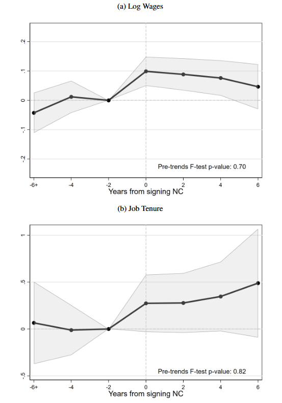

Research
-
How Do Firms Respond to Gender Quotas? Evidence From California's SB826
-

-
Abstract
This study examines the impact of California’s SB826, enacted in 2018 and requiring at least one female director on corporate boards by the end of 2019, on financial performance and corporate governance. The quota dramatically increased female representation on boards by 26 percentage points without negatively affecting financial performance from 2018 to 2021. Corporate governance measures remained stable during this period. These results are consistent with both the integration of qualified female candidates and the presence of tokenism. The former suggests that network barriers, rather than a lack of qualified female candidates, contribute to the persistence of all-male boards.
-
Presentations
- Interdisciplinary Seminar Series at Columbia University (2022)
- Discrimination and Diversity Workshop at University of East Anglia (2022)
- 17th Annual Economics Graduate Student Conference at Washington University in St. Louis (2022)
- Society of Labor Economists (2024)
- Canadian Economics Association (2024)
- Link to full study
-
Training and Job Separation in Imperfect Labor Markets: The Case of Non-Compete Agreements
- 
-
Abstract
Non-compete agreements are provisions within employment contracts that prevent workers from joining competing firms. They are prevalent in the US workforce, with 38% of workers having signed such clauses at some point in their careers. Despite their vast usage, there is limited research on the incentives for workers and firms to use non-compete agreements. We show that non-compete agreements can create one market failure – inefficient lack of job separation – while mitigating a separate market failure – inefficient provision of industry-specific investment by firms. The model yields the predictions that (i) non-compete agreements are more likely to be used in industries where employer training is more "general" and (ii) non-compete signers have longer job tenures, higher wages, and receive more firm-provided investment relative to similar workers without non-compete agreements. Using newly-released panel data on the usage of non-compete agreements from the NLSY97, we test the model's predictions. Consistent with the theory, we find that non-compete signers are more concentrated in knowledge-intensive industries, remain with their employers for 3 more months than individuals without such agreements, and receive a 7% wage premium for signing a non-compete agreement. Non-compete signers do not experience higher wage growth or measures of employer provided investment.
-
Presentations
- Queen's University Faculty-PhD Working Group (2024)
- Organizations and Markets Workshop at Smith School of Business (2024)
- European Association of Labor Economists (2024)
- Link to Full Study
Other Works in Progress
- The Effects of Non-Compete Regulation
- Mandatory Disclosure and Female Representation in Corporate Leadership (with Dhruv Baswal)